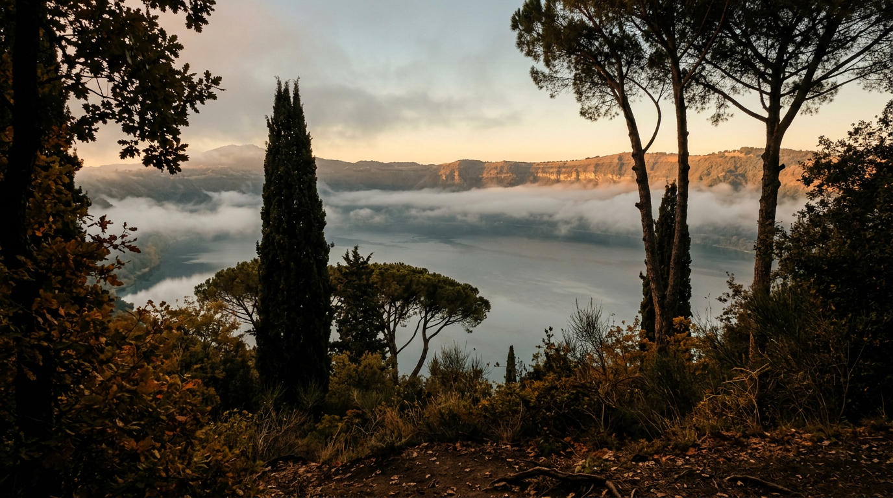

The crater's microclimate — why Castel Gandolfo feels good.

For four centuries popes have climbed to Castel Gandolfo to escape the heat of Rome, and before them the emperor Domitian did the same. It is not only tradition: altitude, a lake 170 metres deep, regular winds and dense woods create a recognisable microclimate around the village. Here is how it works, with numbers you can check.
Four hundred metres higher
The historic centre stands at 426 metres above sea level on the western rim of the crater; the lake lies lower, at 293 metres ([Treccani](https://www.treccani.it/enciclopedia/lago-di-albano_(Enciclopedia-Italiana)/), [Wikipedia](https://it.wikipedia.org/wiki/Castel_Gandolfo)). In the atmosphere temperature falls on average by about 6.5 degrees for every kilometre of altitude, the value used by the International Standard Atmosphere ([Wikipedia, Lapse rate](https://en.wikipedia.org/wiki/Lapse_rate)). In practice, climbing from Rome to the Castel Gandolfo belvedere means, in theory, gaining two or three degrees of coolness. On real days the difference depends on wind, cloud and time of day, but the principle is the one that has explained summer retreats in the Alban Hills since antiquity.
An official indicator confirms it. For heating purposes the Italian state assigns each municipality a number of degree days, a measure of how cold the year is: Castel Gandolfo has 1,966, Rome 1,415. Both are in climate zone D, but the papal village is noticeably cooler than the capital ([Tuttitalia, climate classification](https://www.tuttitalia.it/lazio/provincia-di-roma/classificazione-climatica/)).
Ventilated summers
Wikipedia describes the local climate as temperate Mediterranean, with mild winters, autumns warmer than springs and ventilated summers ([Wikipedia](https://it.wikipedia.org/wiki/Castel_Gandolfo)). Winds come mainly from the south and west: the scirocco, sometimes very strong, and the libeccio; at times the ponentino, Rome's characteristic sea breeze, also appears. In winter the tramontana and grecale blow down from the Agro Romano plain ([Wikipedia](https://it.wikipedia.org/wiki/Castel_Gandolfo)). Coolness does not guarantee low temperatures, though: summer here is still hot, with highs that can reach 35 degrees and rare peaks above ([Wikipedia](https://it.wikipedia.org/wiki/Castel_Gandolfo)).
The lake as a thermostat
Lake Albano, formed by the merging of two craters, covers six square kilometres and holds about 464 million cubic metres of water, with an average depth of 77 metres ([Treccani](https://www.treccani.it/enciclopedia/lago-di-albano_(Enciclopedia-Italiana)/)). Such a mass stores heat in summer and releases it slowly, softening extremes. INGV explains that in temperate climates the surface warms in summer and cools in winter, causing a seasonal mixing of the waters: the lake is currently monomictic, meaning it overturns once a year ([INGVambiente](https://ingvambiente.com/2022/11/09/il-rischio-nascosto-tra-le-profondita-del-lago-di-albano/)).
There is a paradox, however. The lake basin, more than a hundred metres below the village, is probably the coldest and dampest part of the municipality: at night cold air slides down to the bottom and pools there, the phenomenon known as thermal inversion. This is why morning mists often form along the shores and lift as the sun rises ([Wikipedia, Lago Albano](https://it.wikipedia.org/wiki/Lago_Albano), [Wikipedia](https://it.wikipedia.org/wiki/Castel_Gandolfo)).
“Where one could breathe clean air and escape the oppressive summer heat of the Eternal City.”Vatican News, September 2026
Rain, humidity and woods
Castel Gandolfo lies in the path of humid Tyrrhenian air currents and receives about 900 millimetres of rain a year. The station on the western side of the lake records just over 900 mm, concentrated in autumn, with November the wettest month and July the driest ([Wikipedia](https://it.wikipedia.org/wiki/Lago_Albano)). On the slopes the stau effect is at work: moist air rising up the hills cools and releases rain on the first heights facing the sea ([Wikipedia](https://it.wikipedia.org/wiki/Castel_Gandolfo)). The lake itself, together with the artificial pond of the golf course, makes the air more humid than the local average.
Vegetation does the rest. The crater slopes are covered with chestnut and oak woods, with holm oaks in the warmest spots: an environment that is “typically shady and cool, even in the summer months” ([Castelli Romani Park, Roma in campagna](https://www.romaincampagna.it/itinerari/parco-naturale-regionale-dei-castelli-romani/)). The regional park notes that the microclimate tempered by Lakes Albano and Nemi, together with volcanic soils rich in potassium and phosphorus, has made the Castelli ideal wine country ([Parchi Lazio](https://www.parchilazio.it/documenti/schede/guida_laghi_rm.pdf)).
An ancient choice
Domitian chose this site for his villa precisely for its microclimate, and tradition holds that on 10 October 1626 Urban VIII entered Castel Gandolfo, inaugurating the popes' summer residence in search of clean air far from Rome's heat ([Vatican News](https://www.vaticannews.va/en/pope/news/2026-09/castel-gandolfo-popes-presence-care-for-land-affection-of-people.print.html)). Anyone who climbs to the belvedere on a late September morning, as the mist rises from the crater, still understands why.